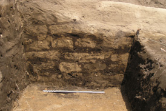
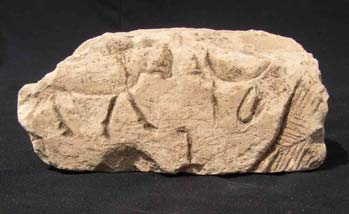
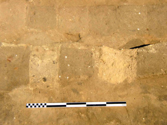
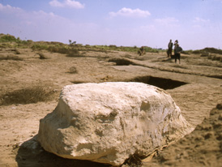

|
Selective excavations
undertaken in 2003 and 2004 provided ground-truthing for the magnetometry
survey data, and clarified the basic layout of the temple. A wall,
7.2m thick, surrounded an area of 60x48m, setting the temple's sacred
area apart from that of the rest of the enclosure.
A modest temple
lay within, consisting of a small sanctuary preceded by a hall with
two rows of three columns, itself fronted with a wide court. Unfortunately,
only the lowest foundation courses are preserved in the centre of
the temple, so we can only suggest where doorways may have been
located.
|

Foundation wall built of mud-bricks with high sand content,
with clean sand foundation layer in foreground.
|
|

Limestone
column base fragment, bearing the royal name 'Horus, Strong Bull'.
Height: 11cm.
|

Detail of a temple foundation wall, illustrating the
different composition of clays in the mud-bricks used for construction.
|
|
Excavation of one of the column emplacements revealed a later
pit had been cut into the sand bed, and fragments of Ramesside column
bases had been dumped into it, bearing the names of Ramses II.
The discovery of the column bases, and the decorated blocks
found between 1949 and 1951, strongly indicate that the temple was
largely built of limestone. Fragments of worked quartzite and pink
granite encountered in excavations hint at the variety of material
originally employed in the temple.
|

Fragment of uninscribed column base lying on surface
of temple ruins.
|